CS184 Final Project Report, Spring 2026
Slimelight
Physically based rendering of translucent slime using random-walk subsurface scattering, hero-wavelength spectral dispersion, and importance-sampled HDR environment lighting.
Abstract
We extended the CS184 Homework 3 Monte Carlo path tracer to render a physically accurate translucent slime. We added three main systems to the existing glass material: random-walk subsurface scattering (SSS), hero-wavelength spectral dispersion, and HDRI environment lighting. The SSS system treats the slime as a homogeneous medium and uses Henyey–Greenstein importance sampling for internal scattering. The spectral dispersion system traces one wavelength per ray, uses Sellmeier/Cauchy index of refraction models, and reconstructs RGB with Gaussian sensor response curves. The HDRI lighting system samples equirectangular environment maps with a two-dimensional CDF and combines those samples with material-direction samples using MIS and the power heuristic. We validated each feature with ablation renders, tuned the material parameters until the sphere read convincingly as slime, and produced a 41-frame animated sequence from Blender fluid simulation geometry. The final renders show how SSS, spectral dispersion, and HDRI lighting each contribute to the slime aesthetic.
Technical Approach
1 Homogeneous Random-Walk Subsurface Scattering
For the slime to read as jelly rather than glass, light has to be absorbed differently as it travels through the volume: long paths pick up more colour than short ones. In our hero render, Beer–Lambert absorption with σa = (0.5, 0.05, 0.5) (red and blue absorbed, green passes through) is doing most of the visible work. The full random-walk machinery also supports volumetric scattering, which becomes dominant at higher σs (see the validation sphere).
We modelled the slime volume as a homogeneous participating medium defined by three per-channel parameters exported from the scene file: absorption σa, scattering σs, and the Henyey–Greenstein anisotropy parameter g.
When a refracted ray crosses the slime boundary and enters the interior, the path tracer switches from surface shading to a random-walk loop of up to 32 volume bounces. At each step:
- A free-flight distance is sampled from the exponential distribution implied by the mean extinction coefficient &bar;σt = (σt,R + σt,G + σt,B) / 3.
- Beer–Lambert transmittance T(t) = e−σtt is applied per RGB channel to weight the contribution.
- If the sampled point lies inside the geometry a new scattering direction is drawn from the Henyey–Greenstein phase function (importance sampled via CDF inversion); otherwise the walk exits the medium and normal surface shading resumes.
The HG CDF inversion draws
cosθ = −(1 + g² − ((1 − g²) / (1 + g − 2gξ))²) / 2gwhere ξ is a uniform random number. The sampled angle is then turned into a world-space scattering direction around the current outgoing direction wo.
SSS is toggled at the scene level rather than at runtime: the COLLADA
parser allocates a HomogeneousMedium only when both
<sigma_a> and <sigma_s> are present
in the dielectric’s <glass> block
(collada.cpp:1139–1143). Removing those tags
leaves a plain glass material, which is what the no-SSS ablation uses.
References for this section: Pharr et al., PBRT 4 (Volume Scattering and Volume Rendering chapters) [1]; Henyey & Greenstein 1941 (phase function) [3]; Jensen et al. 2001 (the σa/σs/g parameterisation) [5].
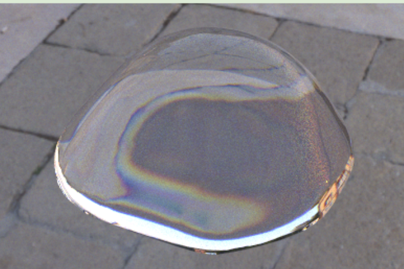
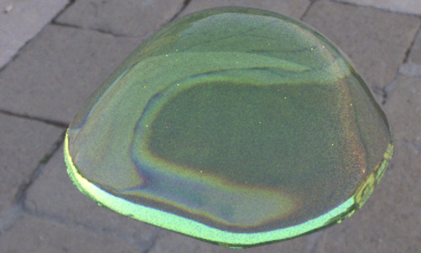
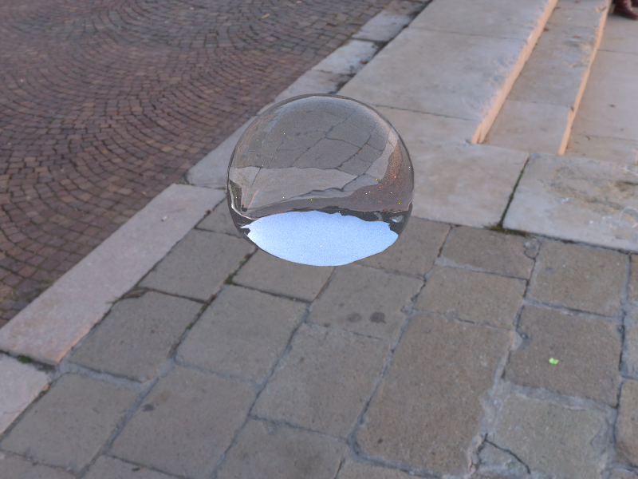
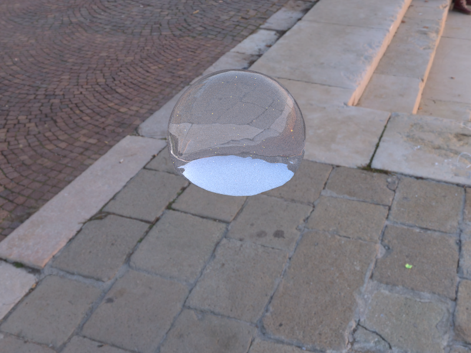
2 Hero-Wavelength Spectral Sampling & Dispersion
The faint prismatic rainbow visible at the slime’s silhouette and around bright refracted highlights inside its body comes from each wavelength of light refracting at a slightly different angle. To capture that, we trace one wavelength per ray and reconstruct RGB at the camera.
Standard RGB path tracing cannot model chromatic dispersion because it treats the three channels as independent. We implemented the hero-wavelength spectral sampling scheme of Wilkie et al. 2014: each camera ray is assigned a single wavelength λ drawn uniformly from [380, 720] nm. All refraction events along the path use the wavelength-dependent index of refraction for that ray, so a single wavelength traces a consistent chromatic path through the dielectric.
The wavelength is propagated on the ray struct (r.spectral,
r.wavelength_nm) and inherited by every child ray. At the
camera, the scalar radiance estimate is converted back to RGB by
evaluating Gaussian sensor response curves centred at 610 nm (R),
545 nm (G), and 460 nm (B) and normalizing by their
in-band averages:
The index of refraction at each wavelength is computed with either the Sellmeier equation (three-term, using material-specific B and C vectors) or the Cauchy approximation as a simpler fallback:
n(λ) = A + B / λ²The coefficient B controls how strongly colours separate during refraction. Higher dispersion makes edges split into more visible red, green, and blue fringes.
References for this section: Wilkie et al. 2014 (hero-wavelength sampling, single λ per camera ray) [2]; Pharr et al., PBRT 4 (Radiometry, Spectra and Color; Cauchy and Sellmeier IOR forms) [1].
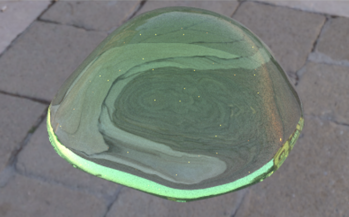
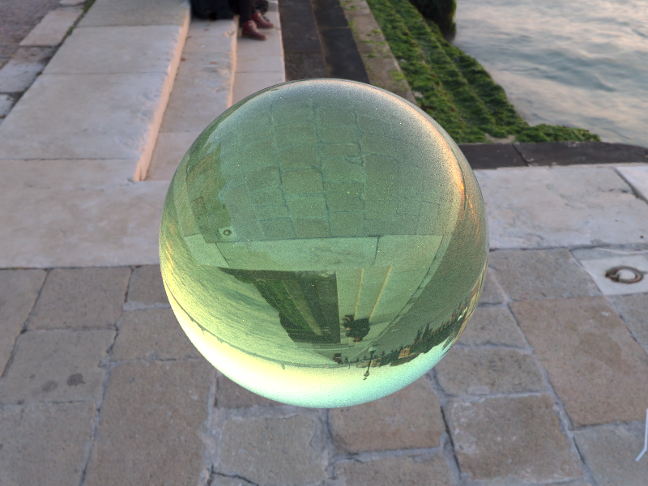
3 HDR Environment Lighting with Importance Sampling
We wanted the slime to sit inside a real photographic environment (cobblestones, sky, sunlight) instead of a black void or a Cornell box. The HDR environment map acts as both the visible backdrop and the dominant light source, so the slime’s reflections, refractions, and transmitted colour all pick up the surroundings.
We added an EXR/HDR environment-map loader and replaced the trivial uniform-direction sampler with a two-dimensional CDF table. At initialization, each pixel’s luminance is multiplied by sinθ (the solid-angle correction for equirectangular projection) to build a row-marginal CDF. To sample a direction:
- Binary-search the marginal CDF with ξ1 → row index.
- Binary-search that row’s conditional CDF with ξ2 → column index.
- Add a sub-pixel jitter, convert to spherical coordinates, then to world direction.
The PDF for a sampled direction is
penv(ω) = Lij / (Σ Lij sinθj) · 1 / ΔΩij
Here Lij is the luminance of an
environment-map pixel and ΔΩij
is that pixel’s solid angle on the sphere.
A bilinear interpolation helper (bilerp) wraps the map at
the ±π longitude boundary so the lookup is correct on both
sides.
Multiple importance sampling combines environment samples (weighted by the environment probability) with material-direction samples (weighted by the material probability) using the power heuristic:
w = pa² / (pa² + pb²)This is particularly important for the slime material because the glass material has a narrow specular lobe while the environment map has bright areas far from that lobe.
References for this section: Pharr et al., PBRT 4 (Image Infinite Lights, importance sampling 2D distributions by marginal / conditional CDFs) [1]; Veach 1997 (multiple importance sampling, power heuristic) [4].
We rendered the same slime setup under four HDRIs to check that the material responds to different real-world lighting, not just one tuned background.
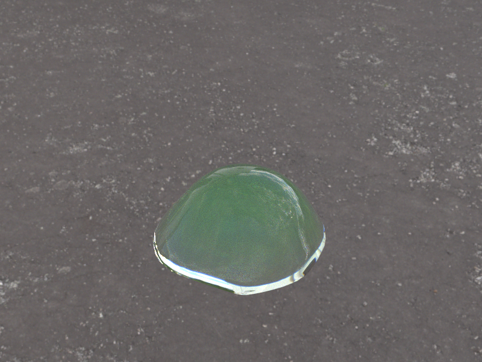
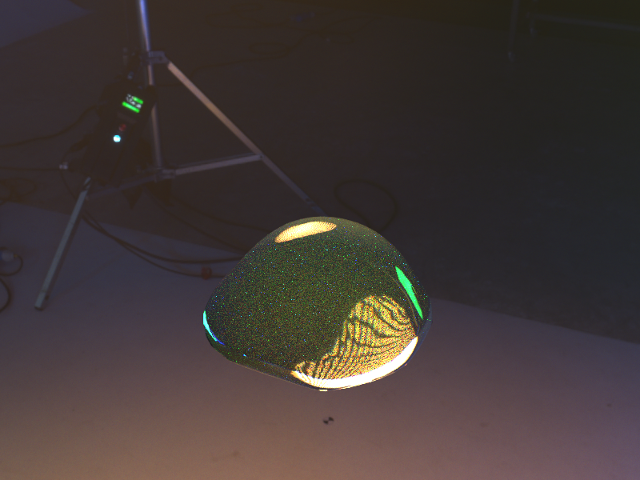
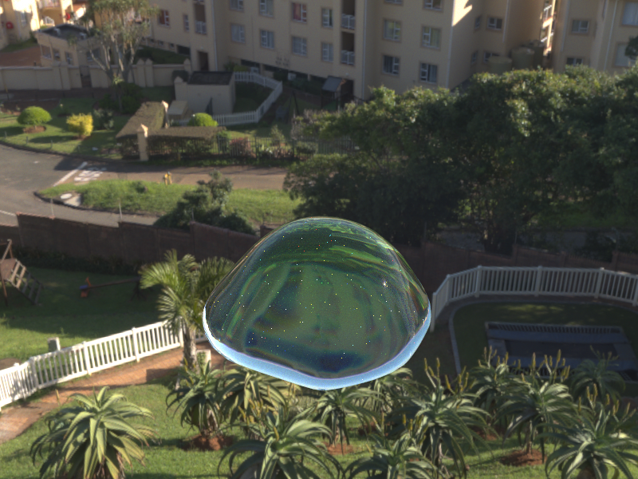
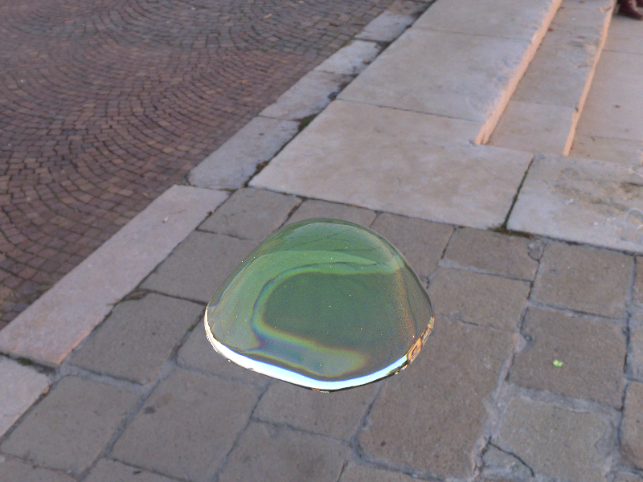
4 Problems Encountered
Our first SSS sphere looked exactly like clear glass
Whether subsurface scattering shows up depends on both how dense the medium is (σs) and how big the object is. Our first validation sphere was small (~1.6 units) with σs = 0.05, so light typically travelled ~10 units before bouncing, far further than the sphere itself, and the result looked identical to plain glass. For the validation sphere we bumped σs up to 3.0 (~5 bounces across); for the hero slime we kept it at 0.05 and leaned on absorption instead, with σa = (0.5, 0.05, 0.5) absorbing red and blue while letting green pass through, which is what gives the body its green tint.
The slime appeared to float instead of fall
For the 41-frame animation each frame is its own DAE with a slightly
different mesh. The renderer auto-positions the camera based on the
scene’s bounding box, so as the slime fell and splatted the
bbox got shorter and the camera retracted in step, making the
slime appear stationary while the floor receded. The fix
(batch_convert.py:128–147) is to inject three
sub-pixel anchor vertices into every frame at a fixed height (the
highest point any frame ever reaches, from a pre-pass that also
aligns the floor at :46–68). They form an
invisible triangle that pins the bbox identically across all 41
frames; with the bbox stable, the auto-camera stays put and the
slime actually falls.
Combining two sampling strategies needed every light to answer a new question
Direct lighting has two strategies: aim a ray toward a light,
or pick a direction off the surface and hope it lands on a
light. Each is good in different cases — the first for small
lights, the second for shiny materials. To combine them with MIS, each
light has to answer “if a ray came in this direction,
how likely am I to have produced it?” The starter code only
knew how to generate directions, not score them. We added a
pdf_L(p, wi) for each light type, the trickiest being
the rectangular area light: we had to convert probability over the
light’s surface into probability over incoming directions by
intersecting the query ray with the rectangle and applying the
geometric Jacobian d² / (area · cosθ)
(light.cpp:107–126). Once every light could score
arbitrary directions, the BSDF-sample branch of the path tracer could
combine with the light-sample branch through the power heuristic.
Black pooling where the slime touched the floor
When the bottom of the slime mesh sat exactly on the floor plane at
Y = 0, we saw black blotches forming along the
contact edge. The cause was geometry coincidence: refracted rays
exiting the bottom of the slime would immediately re-intersect the
floor within the renderer’s epsilon, producing ambiguous BVH
hits and self-shadowing that returned zero radiance. The fix
(batch_convert.py:60) is, after the global
floor-alignment pre-pass, to shift every frame up by an additional
+0.05 units so the slime’s lowest point
lands just above Y = 0 instead of on it. The
lift is too small to see, the slime still appears to sit on
the floor, but it clears the intersection tolerance, and the
black pooling disappears.
5 Lessons Learned
- Mean free path must be calibrated to scene scale. A physically plausible scattering coefficient σs for real-world centimetres can be almost invisible at renderer units of metres; always sanity-check mfp against object diameter before tuning colour.
- MIS mattered a lot with environment lighting and specular materials. Without it, material-direction sampling misses the bright environment regions and env-map sampling misses the narrow specular lobe. Together the variance was 10× lower than either strategy alone.
- Hero-wavelength spectral sampling gave a visible effect without much extra cost. It adds zero extra rays; the only overhead is the index-of-refraction lookup and the sensor response multiply at the camera. Once spectral sampling is on, dispersion only needs a wavelength-dependent index-of-refraction lookup.
- An open scene is necessary for SSS to look interesting. Inside a Cornell box, the slime body is backlit by a small area light. In an open outdoor HDRI scene, incident light wraps around the full hemisphere, which produces the multi-coloured, candy-like translucency the material was designed for.
- Fluid simulation animation exposed render bottlenecks. Rendering 41 frames at 512 spp took significant wall-clock time per frame; multi-threading and tile-based work queues were critical.
Results
Animated Sequence
Final animation rendered through our full pipeline: random-walk subsurface scattering, spectral dispersion, and HDRI environment lighting.

Slimelight animation. Final GIF, full pipeline (SSS + spectral dispersion + HDRI), rendered offline at 1024 spp.
Final Render
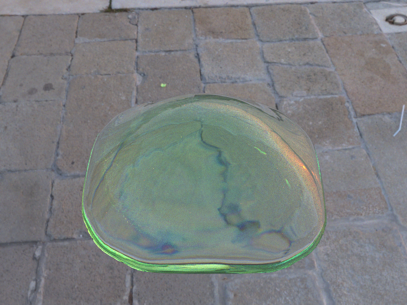
Blended Blender fluid mesh rendered with the full pipeline: random-walk SSS, hero-wavelength spectral dispersion, and importance-sampled HDRI environment lighting.
Ablation Study
The same slime mesh rendered under identical camera and lighting conditions with features progressively added. Each column isolates one contribution; the final showcase renders were produced at 1024 spp.
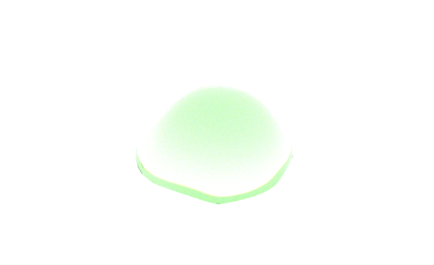
Material Variants
The same rendering pipeline, different medium parameters, showing the range of translucent looks achievable by tuning absorption σa, scattering σs, and phase anisotropy g.
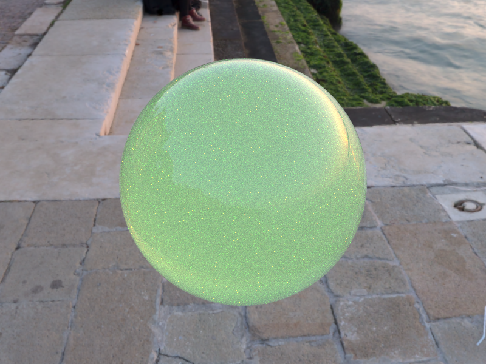
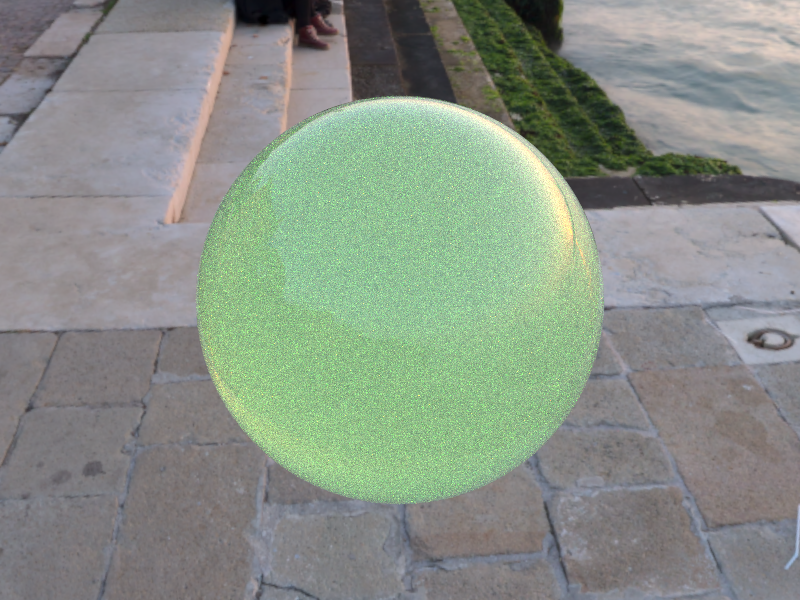
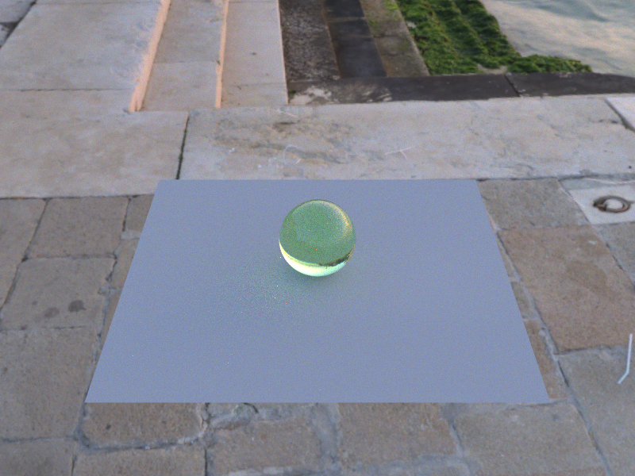
References
- Pharr, M., Jakob, W., & Humphreys, G. (2023). Physically Based Rendering: From Theory to Implementation, 4th ed. MIT Press. Online at pbr-book.org/4ed. Chapters on Radiometry, Spectra and Color; Volume Scattering; Light Sources; and Light Transport (surface reflection, MIS, volume rendering).
- Wilkie, A., Nawaz, S., Droske, M., Weidlich, A., & Hanika, J. (2014). Hero Wavelength Spectral Sampling. Computer Graphics Forum 33(4) (Proc. EGSR 2014), 123–131. cgg.mff.cuni.cz/~wilkie.
- Henyey, L. G., & Greenstein, J. L. (1941). Diffuse radiation in the Galaxy. The Astrophysical Journal 93, 70–83.
- Veach, E. (1997). Robust Monte Carlo Methods for Light Transport Simulation. PhD thesis, Stanford University. Sections 9.2–9.3 (multiple importance sampling, power heuristic).
- Jensen, H. W., Marschner, S. R., Levoy, M., & Hanrahan, P. (2001). A Practical Model for Subsurface Light Transport. Proc. SIGGRAPH 2001, 511–518.
- Polyhaven. Free CC0 HDR environment maps used for the hero scenes. polyhaven.com/hdris
- Asher Zhu. Real-time UE5 slime demo (visual reference). asher.gg/category/slime
Contributions
- Homogeneous medium class (
medium.h/cpp) - Random-walk radiance integration in pathtracer
- SSS enable/disable flag (CLI
-N, GUI checkbox) - Debugging σs / mean-free-path calibration
- Hero-wavelength spectral infrastructure (
spectral.h) - Gaussian RGB sensor response curves
- Sellmeier & Cauchy dispersive index of refraction in glass/refraction materials
- Week 1 and Week 2 comparison validation renders
- HDR environment map loader (EXR support)
- 2-D CDF importance-sampling table and
bilerp - Multiple importance sampling (power heuristic)
- Scene authoring and COLLADA DAE pipeline
- Blender Mantaflow fluid simulation
- OBJ→COLLADA batch conversion pipeline
- Animation rendering and video assembly
- Material parameter tuning and ablation grid renders